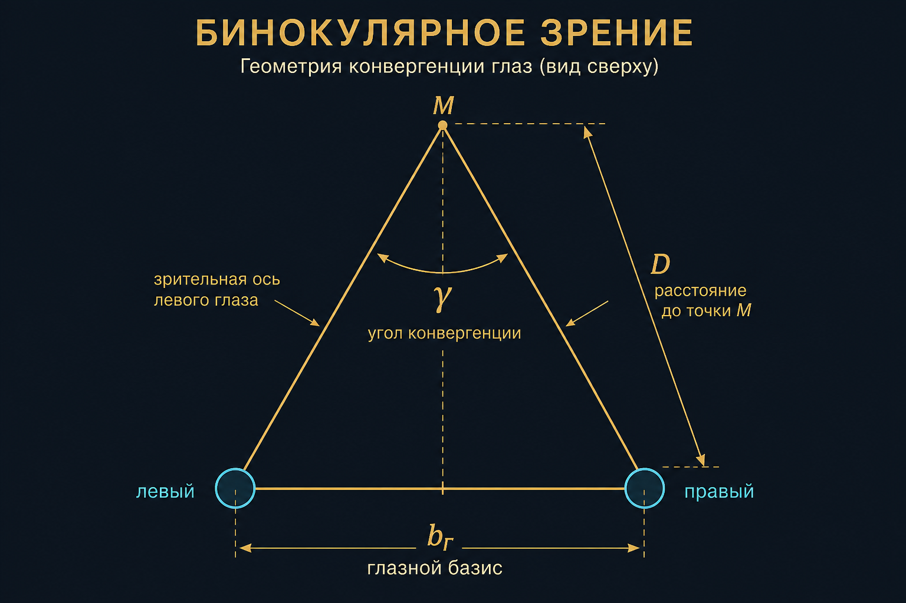
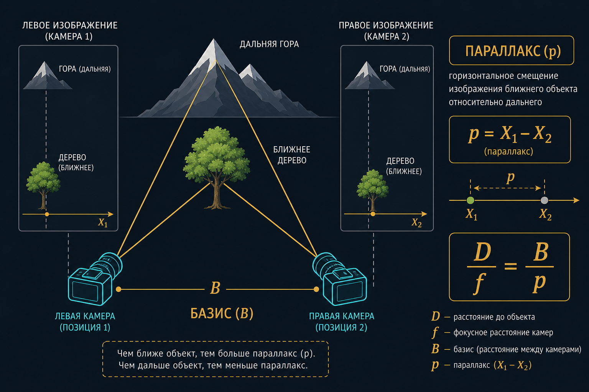

Ф08 · пара 1,5 ч · базис · параллакс · триплет · конвергенция
Монокулярное зрение
Один глаз. Центральная проекция, резкость — аккомодация. Глубину мозг угадывает по перспективе, перекрытию, дымке, знакомому размеру — не по разности ракурсов.

Глазной базис bг
Расстояние между центрами хрусталиков. У людей примерно 55–72 мм, среднее ~64–65 мм.
Угол конвергенции γ
Угол между зрительными осями на точку фиксации. На бесконечности оси параллельны, γ → 0. Аккомодация с γ связана, но это не одно и то же.
Стереоэффект
Ощущение рельефа при двух ракурсах: натура, стереопара, автостереограмма, голограмма. В ФГМ нужен измеримый вариант: разность ракурсов → координаты.
Кино и StereoPhoto Maker не заменяют уравнивание связки.
Стереопара
Два кадровых снимка одной местности (или объекта), полученных с разных точек пространства и имеющих взаимное перекрытие. Измеряемая величина — продольный параллакс одноимённых точек. Не путать с анаглифом и «3D в кино»: там показ, здесь — засечка.
Параллакс
Смещение видимого положения объекта относительно фона при смене точки съёмки. На стереопаре продольный параллакс p = X₁ − X₂ (разность абсцисс одноимённых изображений точки).
p = X1 − X2в нормальном случае оси параллельны, равные f, базис вдоль X

D / f = − B / pD — отстояние до точки, B — базис, f — фокусное, p — параллакс; ближе объект — больше |p|; p → 0 на бесконечности
Идеализация: оптические оси параллельны, равные f, базис вдоль оси X снимка. Реальный полёт и конвергентный стенд — полный случай Ф10, эту формулу туда не тащить.
σZ ∼ Z² / (B · f) · σp
Узкий базис «как глаза» с 200 м даёт рельеф в шуме. Слишком широкий — нет общих точек. Тот же компромисс B/H, что на А04.
Z = 50 м, B = 0,065 м (глаза), f = 50 мм, σp = 1 px ≈ 0,005 мм.
σZ огромна: глазной базис не для обмера фасада. На стенде B — десятки сантиметров / метры.
Диспарантность
Разность положений одной точки на двух сетчатках. В курсе часто синоним параллакса на снимках. В CV disparity — поле p(x,y).
Карта глубины
Изображение, в пикселе которого лежит расстояние до камеры, а не цвет. Продукт стереосопоставления. Ещё не ЦМР в СК местности.
Цифровая модель местности (ЦММ)
Цифровое представление видимой земной поверхности, включая искусственные сооружения и растительность. Строится по параллаксу (или лидару) после уравнивания блока. Ещё не ортофотоплан: нет ортогональной проекции кадра на эту поверхность.
Перекрытие снимка P
Доля площади снимка, покрываемая смежным кадром. Продольное Px — вдоль маршрута, поперечное Py — между маршрутами. Классика площадной АФС: Px ≈ 60%, Py ≈ 40%. На БВС часто 80×60: запас на триплеты и брак кадра.
Триплет
Зона тройного продольного перекрытия — часть местности, изображённая на трёх соседних кадрах. По общим точкам передают систему координат и масштаб с одной стереопары на следующую. Две изолированные пары без триплета — два несвязанных куска модели.
Конвергентная съёмка
Главные лучи не параллельны — пересекаются под углом γ. Формулы надирной АФС с Bx и Px «как на карте» здесь разваливаются.
B = 6 м, γ = 30°. Формальное Px кадра 100% → полезное перекрытие объекта ~30%. Часть кадра — фон.
Коррелятор слепнет, если угол падения луча к поверхности ≳ 45°.
Чтобы посчитать геометрию, нужна видимость; чтобы знать видимость — нужна геометрия. Дырки лечат вторым маршрутом (объект на боку). Дальше ретопология — Ф09.
ГОСТ Р 51833: как два кадра стоят друг относительно друга, ещё до внешней ориентации в мире. Обычно пять угловых элементов стереопары.
← → пробел — слайды
F — полный экран
N — заметки докладчика